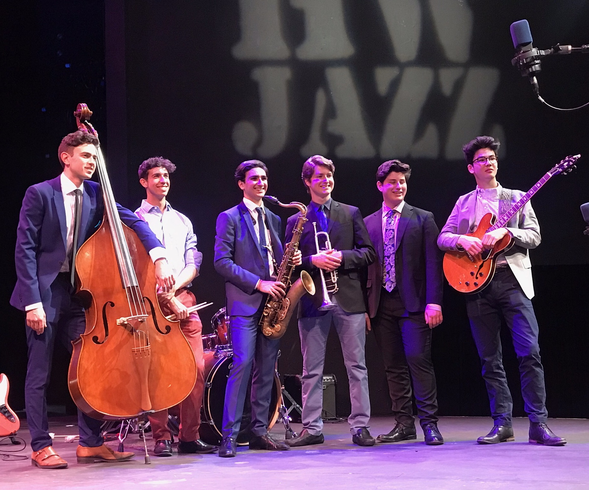
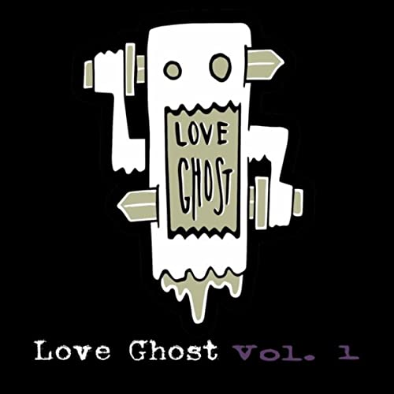

"The Infinite Dream" is a culmination of my musical work from Summer 2021 (all produced in Logic Pro X). It has no lyrics, and I can only describe the music style as atmospheric and synthy. Enjoy!
Harvard Westlake Jazz Explorers (2018-2019)

Downbeat Magazine Student Music Awards: Top High School Jazz Combo
Monterey Jazz Festival Performers (2019)
Love Ghost (2014-2016)

My most formative experience as a musician was my time in Love Ghost, a grunge band from Los Angeles, CA. As a founding member, I would find my middle/high school self in garage rehearsals and tiny venues often.